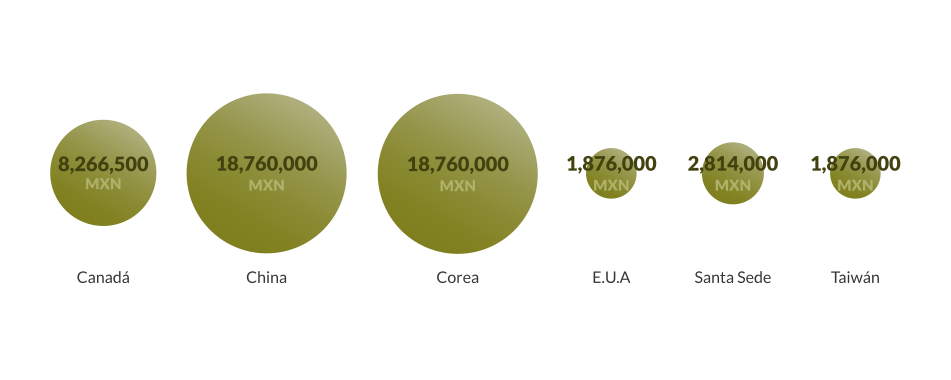

Desastre financiero tras 19/S
Octubre de 2017, por Gisela Martínez y Susana Zavala-Orozco
Una catástrofe natural trae consigo un desastre financiero. Y para poner en pie las zonas devastadas por los sismos del 7 y 19 de septiembre, la cifra que estimó el gobierno de México asciende a 37 mil millones de pesos.
Para reconstruir de los estados se cuenta con varias alternativas, lo primero sería "echar mano" de los fondos de emergencias asignados de los presupuestos estatal y federal; otro consistiría en cobrar los seguros y bonos catastróficos que se hubieran contratado con aseguradoras nacionales e internacionales adquiridos por distintas dependencias.
Adicionalmente, sería administrar el apoyo financiero que hicieron por lo menos 11 países, así como otros organismos, empresas, personalidades del país y otras partes del mundo.
La cifra millonaria que se necesita para resarcir los daños, no sé compara ni remotamente al monto total proyectado para este 2017 del Fondo de Desastres Naturales (FONDEN), que es destinado a atender emergencias ocasionadas por los desastres naturales de todo tipo.
Fondos de emergencias
Lo presupuestado al FONDEN, para este año fue de 6,035 millones de pesos, cubre sólo una mínima parte del desastre financiero ocasionado por los terremotos.
Esta partida federal es proporcionada a los estados que previamente solicitaron la declaratoria de emergencia a la Coordinación General de Protección Civil y enviaron información relevante sobre la situación que atraviesa la entidad.
La Coordinación solicitará a Comisión Nacional del Agua (CONAGUA), Centro Nacional de Prevención de Desastres (CENAPRED) y a la Comisión Federal de Bosques que emita un dictamen técnico para corroborar lo dicho por el estado. Basado en ese informe, la Coordinación emitirá o no la Declaratoria de Emergencia.
Debido a los desastres ocasionados por los terremotos del 19 y 7 de septiembre, 726 municipios pertenecientes a los estados de Chiapas, Guerrero, Veracruz, Puebla, Morelos, Estado de México, Tlaxcala y Ciudad de México, recibieron declaratorias de emergencia extraordinaria, emergencia ordinaria o de desastre natural (algunos municipios recibieron más de una). Estas entidades son las que estarán sujetas a recibir recursos del FONDEN.
Municipios/ delegaciones con declaratoria tras sismos del 7/s y 19/sas hospitalizadas

Fuente de los datos: datos.gob.mx/busca/dataset/municipios-con-declaratoria-de-emergencia-extraordinaria
Consulta 6 de noviembre de 2017
El gobierno federal cuenta con recursos específicos para apoyar una declaratoria de emergencia en todas sus etapas, presentada la solicitud hecha por el gobierno del estado, y emitida la declaratoria de emergencia puede solicitar recursos para proveer insumos en alimentos, abrigo y salud con cargo al fondo revolvente.
Cuando existe declaratoria en caso de desastre se autorizan recursos para la reconstrucción, en la que participan todos los niveles de gobierno. Se conforma un comité de evaluación de daños que estimará los montos de coparticipación para iniciar las labores de reconstrucción, presentando el diagnóstico de los daños a la Dirección General del FONDEN, la lista de empresas contratadas y el plan de trabajo.
Los terremotos de septiembre pasado dejaron a su paso víctimas mortales, heridos y miles de damnificados por la destrucción parcial o total de su vivienda, así como infraestructura con daños severos y sectores comerciales paralizados.
Ya sabemos cuánto necesitamos para reactivar la economía y reconstruir las zonas afectadas, lo que desconocemos a ciencia cierta es si los fondos de emergencia, los seguros, fideicomisos y la ayuda internacional sumados serán suficientes.
Cuentas claras ¿de dónde vienen los recursos para la reconstrucción?
Sabemos que nos somos los únicos interesados y ocupados en saber cómo va a resolver este desafío la actual administración, ni somos los primeros en demandar que los recursos destinados a estos fines sean transparentados por las autoridades responsables de su manejo.
Por su parte, la Secretaría de Hacienda y Crédito Público (SHCP) a través de la Unidad de Seguros, Pensiones y Seguridad Social anunció la recontratación del Bono Catastrófico por un monto de 350 millones de dólares, de los cuales 150 serían entregados en caso de un desastre telúrico mayor a 7.8 de magnitud.
Este bono es sujeto de cobrarse en el caso del sismo del 7 de septiembre que dejó cuantiosas pérdidas en Oaxaca y Chiapas. La mala noticia es que el terremoto del 19S que provocó daños en la Ciudad de México, Puebla, Morelos y Estado de México no alcanzó la magnitud estipulada en la clausulas, por lo que lo damnificados de estos estados no serán beneficiarios de este seguro, del cual dicho de pasó, aún no se sabe el monto exacto.
El fideicomiso Fuerza México funcionará como vehículo receptor de donativos internacionales, iniciativa del Consejo Coordinador Empresarial con el apoyo de la Secretaría de Hacienda y Crédito Público, los cuales serán destinados a las personas afectadas por los sismos, estas aportaciones económicas suman ya 52 millones de pesos.
Por otro lado, diversos líderes políticos hicieron menciones públicas sobre la conveniencia de donar parte de sus recursos que han sido programados para la contienda electoral de 2018. El presidente del Partido Revolucionario Institucional (PRI), Enrique Ochoa, anunció que su partido renunciaba a aproximadamente 258 millones de pesos, equivalentes al 25% del financiamiento anual, asignado por el Instituto Nacional Electoral (INE).
El Movimiento de Regeneración Nacional (MORENA) a través de Andrés Manuel López Obrador, aseguró que su donativo sería de 200 millones de pesos y seria administrado mediante un fideicomiso.
Otro tipo de donadores son el grupo de empresarios, como Carlos Slim que a través de su fundación recaudó aproximadamente 2,374 millones de pesos, de los cuales la Fundación aportó 1,978 millones de pesos conforme a la promesa de que por cada peso donado, se contribuiría con cinco pesos más.
Apple, Samsung, Facebook, Google, AT/T y Uber, IBM, Amazon, Movistar, HP, Microsoft, entre otras empresas anunciaron donativos millonarios que serían transferidos directamente a la Cruz Roja Mexicana.
Auxilio internacional
México ha recibido apoyo técnico, económico y en especie proveniente de 34 países y organismos internacionales, la Secretaría de Relaciones Exteriores a través de diversos comunicados agradeció la contribución e hizo mención del tipo y monto de la ayuda recibida de países como Alemania, Argentina, Bolivia, Canadá, Chile, China, Colombia, Costa Rica, Cuba, Ecuador, El Salvador, Emiratos Árabes Unidos y España.
De igual manera a Estados Unidos, Honduras, Israel, Italia, Japón, Panamá, Perú, República de Corea, Rusia, Santa Sede, Suiza, Taiwán, Turquía y Venezuela, así como también a la Unión Europea y la Oficina de las Naciones Unidas para la Coordinación de Asuntos Humanitarios.
Apoyo económico a México después del 19/s

Fuente de los datos: www.transparenciapresupuestaria.gob.mx/es/PTP/fuerzamexico
Consulta 13 de octubre de 2017
En cuanto a la ayuda en especie, México ha recibido más de 664 toneladas, consistente en agua, alimentos enlatados, artículos de primera necesidad y suministros médicos. Conto con el auxilio de 564 personas, 33 perros y la instalación de un hospital portátil.
Apoyo económico a México después del 19/s
Fuente de los datos: www.transparenciapresupuestaria.gob.mx/es/PTP/fuerzamexico
Consulta 13 de octubre de 2017
Los detalles sobre el tipo de ayuda y cantidades económicas que han otorgado los países y organismos internacionales, así como los Apoyos Parciales Inmediatos entregados a cada entidad en auxilio por los sismos puede ser consultado en el micrositio de
Transparencia presupuestal- Fuerza México
Personajes del mundo del espectáculo, deportivo y empresarial también anunciaron importantes aportaciones a los fondos de ayuda a damnificados y a la reconstrucción de las comunidades afectadas.
Esfuerzos de la Sociedad civil por la organización y la transparencia
En los días posteriores al sismo pudimos observar diferentes obstáculos que alentaban e impedían una adecuada atención de la emergencia; entre ellos y uno de los más importantes: la organización. Diferentes miembros de la sociedad civil, organizaciones y colectivos decidieron tomar el problema en sus manos y poner un poco de orden.
Uno de los ejemplos más productivos fue el de Verificado 19S, una plataforma colaborativa de voluntarios ciudadanos y organizaciones como Artículo 19, Centro Pro de Derechos Humanos, Cencos, Codeando México, R3D, Serapaz, Social TIC, The Data Pub; entre muchas otras que con el apoyo de Google se unieron para verificar y conjuntar la información sobre los insumos, necesidades y donaciones ocurridas durante la catástrofe.
Para la labor de fiscalización de los recursos se conformó #Epicentro, una plataforma que dará seguimiento a las cantidades millonarios destinadas a la atención y reconstrucción de las zonas afectadas, conformada por 30 organizaciones civiles, empresariales y académicas.
La primera tarea consiste en conocer el origen y uso de los recursos destinados a la reconstrucción; el objetivo será identificar e integrar esta información en una sola plataforma.
Por otra parte, la reconstrucción contará con un enfoque social y de derechos humanos, que con contemple la perspectiva de género, infancias y juventudes. Se harán recomendaciones de política públicas para la reparación del daño y evitar que las deficiencias normativas continúen operando.
Las organizaciones que integran #Epicentro trabajarán para que se identifiquen, investiguen y sancionen los actos de corrupción y se garantice la reparación del daño.
El Instituto Nacional de Transparencia, Acceso a la Información y Protección de Datos Personales (INAI), también lanzó la iniciativa Reconstrucción Abierta, se trata 13 acciones de transparencia proactiva que incluye entre ellas herramientas digitales y la apertura de datos.
La creación de Coordinación Nacional para la Reconstrucción, será el órgano que concentrará la información que posean los sujetos obligados que se relacione con la atención de las emergencias derivadas de los sismos con la plena atención de víctimas y damnificados.
El papel de Protección Civil
La Ley General de Protección Civil fue promulgada el 6 de junio de 2012, su antecedente data del Decreto emitido el 3 de octubre de 1985, donde se disponían diversas medidas para crear la Comisión Nacional de Reconstrucción tras la crisis en la Ciudad de México por los sismos del 19 y 20 de septiembre de ese año.
En este instrumento quedó definido en su amplio concepto las acciones solidarias y participativas que deben concentrar y coordinar a los distintos sectores públicos, privados y sociales cuando se presenta un desastre natural.
Antes, durante y después de un desastre, salvaguardar la vida, la integridad y la salud de la población, así como sus bienes, infraestructura, plantas productivas y el medio ambiente. Son los preceptos que quedaron establecidos en esta ley.
A este organismo que depende de la Secretaría de Gobernación (SEGOB), se le ha destinado recursos para que desempeñe tareas de prevención, control o disminución de daños en los casos de emergencia.
Los recursos para este 2017 fueron de $222,097,196 para el Sistema Nacional de Protección Civil, $80,209,408 para el Centro Nacional de Prevención de Desastres y $31,836,736 para la Coordinación Nacional de Protección Civil.
La Dirección General de Protección Civil contó con $48,469,954 y la Dirección General para la Gestión de Riesgos con $34,610,513. En tanto, a la Dirección General de Vinculación, Innovación y Normatividad en materia de Protección Civil se le otorgaron $26,970,585.
Sanciones y multas por desvío de fondos
Los recursos destinados a la atención un desastre natural, así como a la reconstrucción de las áreas pueden terminar en escandalosos casos de corrupción. En los últimos años hemos visto pasar infinidad de ellos en la prensa nacional
Los terremotos del 7 y 19 septiembre pasados nos han sido la excepción, pues el gobierno de Miguel Ángel Mancera en la Ciudad de México, denunció hasta el 19 de octubre 6700 casos de "falsos damnificados" se habían registrado para beneficiarse de apoyos para el pago de renta por un monto de 3 mil pesos cada uno. Esto significarían irregularidades por aproximadamente 20 millones de pesos.
A nivel Federal también, Enrique Peña Nieto denunció casos -sin precisar el número- donde personas han pretendido cobrar apoyos para la reparación de sus viviendas y que no tuvieron afectaciones. Para evitar esta práctica se harían nuevos censos para cerciorarse del estado de las casas con afectaciones, aseguró el presidente.
Aunque existen diversos instrumentos para impedir el desvío de recursos destinados a la atención de víctimas y damnificados parece ser que no han sido suficientes, por ello el presidente de la Comisión de presupuesto y Cuenta Pública en la Asamblea Legislativa capitalina, Mauricio Toledo propuso imponer una pena de 6 a 11 años de prisión y de 800 a mil 200 días de multa a quien desvíe de su destino los donativos.
Los montos destinados a la reparación y atención de las afectaciones por los sismos, se ha calculado en millones de pesos; sin embargo, aún no se cuenta con una cifra exacta de los recursos financieros con que se cuentan que nos permita determinar el monto actual de esos 37 mil millones de pesos que tenemos que reunir.